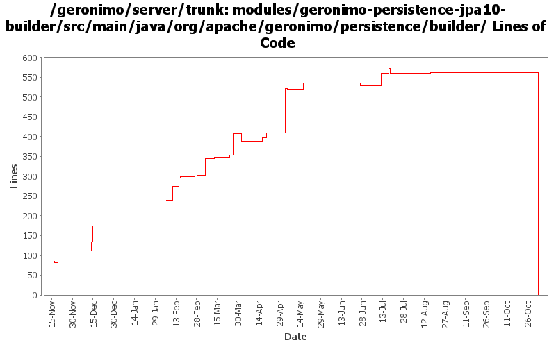

[root]/modules/geronimo-persistence-jpa10-builder/src/main/java/org/apache/geronimo/persistence/builder

| Author | Changes | Lines of Code | Lines per Change |
|---|---|---|---|
| Totals | 51 (100.0%) | 975 (100.0%) | 19.1 |
| djencks | 34 (66.7%) | 906 (92.9%) | 26.6 |
| kevan | 3 (5.9%) | 31 (3.2%) | 10.3 |
| hogstrom | 3 (5.9%) | 15 (1.5%) | 5.0 |
| dwoods | 2 (3.9%) | 12 (1.2%) | 6.0 |
| dain | 3 (5.9%) | 8 (0.8%) | 2.6 |
| dblevins | 1 (2.0%) | 2 (0.2%) | 2.0 |
| gawor | 1 (2.0%) | 1 (0.1%) | 1.0 |
| prasad | 4 (7.8%) | 0 (0.0%) | 0.0 |
GERONIMO-3565. Modules distributed amongst framework/modules and plugins
0 lines of code changed in 4 files:
espace spaces with %20 when creating a URI (GERONIMO-3324)
1 lines of code changed in 1 file:
GERONIMO-3317 revert this fix. It's causing JPA deployment problems (duplicate PersistenceUnitG
0 lines of code changed in 1 file:
GERONIMO-3317 Sets PersistenceUnitGBean as the dependence of Module GBean to make sure the ClassTransformer is installed before EjbModuleImplGBean. Song, thanks for the patch.
11 lines of code changed in 1 file:
GERONIMO-33208 allow overrides in our plan to persistence.xml
72 lines of code changed in 1 file:
GERONIMO-3263 put the PUGBean in the right Configuration
11 lines of code changed in 1 file:
GERONIMO-3211 The PersistenceUnitGBean is added to wrong configuration for EAR application
1 lines of code changed in 1 file:
GERONIMO-3177 GERONIMO-3122 make exclude-unlisted-classes work. Also make jpa work in standalone ejb jars and wars
22 lines of code changed in 1 file:
GERONIMO-3132 GERONIMO-3165. Fix a bunch of stuff with locating persistence.xml and persistence unit jars. Hook up with openejb for extended persistence contexts
33 lines of code changed in 1 file:
GERONIMO-3134 GERONIMO-3136 Fix app client refs including ejb refs. Get a lot closer to jpa working on the app client
9 lines of code changed in 2 files:
GERONIMO-3131 GERONIMO-3132 GERONIMO-3133 GERONIMO-3134 Defaults for persistence units. Supply locations of jars with persistent classes to the PersistenceUnitInfo. Match a ref with not persistence unit specified to a unique match. Allow wars to have jndi references pointing to the war module, not just the ear
192 lines of code changed in 3 files:
GERONIMO-3107 Added ability to track previously processed Persistence Units
15 lines of code changed in 3 files:
GERONIMO-3017 Apply patch from Jay McHugh. Allows persistence.xml file to be specified in a war file. Thanks Jay.
18 lines of code changed in 1 file:
GERONIMO-3022 PersistenceContext and PersistenceUnit annotation support
4 lines of code changed in 2 files:
GERONIMO-3026 support 'persistence/' location convention for PersistenceUnitRefs
57 lines of code changed in 1 file:
GERONIMO-3026 support convention of locating jpa stuff under persistence/
76 lines of code changed in 1 file:
GERONIMO-3018 avoid NPE when transactiontype is not specified. I defaulted to JTA but didn't check if that is correct
6 lines of code changed in 1 file:
organize imports
2 lines of code changed in 1 file:
Add support for MDB deployment
4 lines of code changed in 1 file:
GERONIMO-2934 Create ClassFinder in module builders. This almost certainly has bugs
42 lines of code changed in 2 files:
GERONIMO-2827 some ee5 app client support: no dd required and some injection support. Also better support for no dd in ears, and help ejb module builder not object if its given a non-ejb module. Also refactor some naming builder stuff
5 lines of code changed in 2 files:
GERONIMO-2887 Start hooking up injection for jetty
2 lines of code changed in 2 files:
fix a double typo. <jtaDataSource>foo</jtaDataSource> should now work
2 lines of code changed in 1 file:
GERONIMO-2485 Work on PersistenceUnitBuilder. jpa test app now deploys but can not access most persistence features
14 lines of code changed in 1 file:
GERONIMO-2485 Make persistence unit gbean abstract names more unique. NOT FINISHED, but in its current state gives different names to autogenerated cmp persistence units in different ejb modules
27 lines of code changed in 1 file:
Make persistence unit deployer use better gbean names and search for persistence.xml files
116 lines of code changed in 1 file:
Overhaul of integration leveraging the new descriptor parsing and conversion code in openejb
2 lines of code changed in 1 file:
Ejb deployment now work, but executing the beans has not been tested
4 lines of code changed in 2 files:
GERONIMO-2657 Pay attention to spec descriptors as well as our proprietary ones. Change the naming schema to use the same constant strings as the spec. Include a test of spec descriptor persistence refs
88 lines of code changed in 2 files:
GERONIMO-2657 intermediate checkin, new method in AbstractNamingBuilder and deal with spec refs in PersistenceUnitRefBuilder
74 lines of code changed in 2 files:
GERONIMO-2657 rename entity-manager-factory-ref to persistence-unit-ref
23 lines of code changed in 1 file:
GERONIMO-2460 move some persistence builders into the persistence builder module, and update them to use more infrastructure
29 lines of code changed in 2 files:
GERONIMO-2537 Update the src headers in server/trunk/modules to be compliant with the new ASF src header and copyright policy (http://www.apache.org/legal/src-headers.html). I also did some cleanup of the src headers and tried to make them all a consistent format
13 lines of code changed in 1 file:
GERONIMO-2484 NamespaceDrivenBuilders should register QNameSets
0 lines of code changed in 2 files: